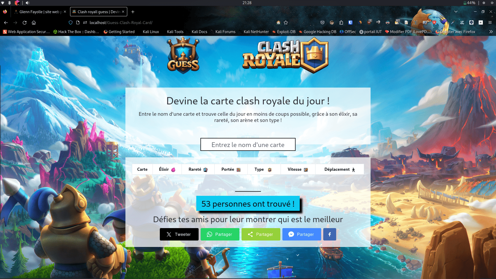

Ce projet personnel consistait à développer un site web en JavaScript, où le défi est de deviner une carte du jeu mobile Clash Royale chaque jour.
RESSOURCES
Projet en groupe (3 personnes)
Développement web (JavaScript)
Développement d'interface
Qualité et au-delà du relationnel
CONTEXTE
Durée : 1 mois
Attente : rendre le jeu simple et accessible à jouer.

Ici, l'utilisateur rentre le nom d'une carte et essaie de trouver la bonne (la carte du jour) à partir d'indices tel que l'élixir, la rareté, le type de carte, etc. Ce projet résultant est né grâce aux compétences acquises à l'IUT.
Relations entre les réalisations personnelles et le programme de BUT Informatique
CE 6.04 - Collaborer : développer une communication efficace et collaborative.
Ex : Mise en place d'un Discord et de réunions quotidiennes.
AC 21.03 - Réaliser : adopter de bonnes pratiques de conception et de pragrammation.
Acquis
Ex : Utilisation de requêtes asynchrones.
AC 25.04 - Conduire : définir et mettre en oeuvre une démarche de suivi de projet.
Acquis
Ex : Utilisation de l'outil Trello pour ce répartir les tâches.